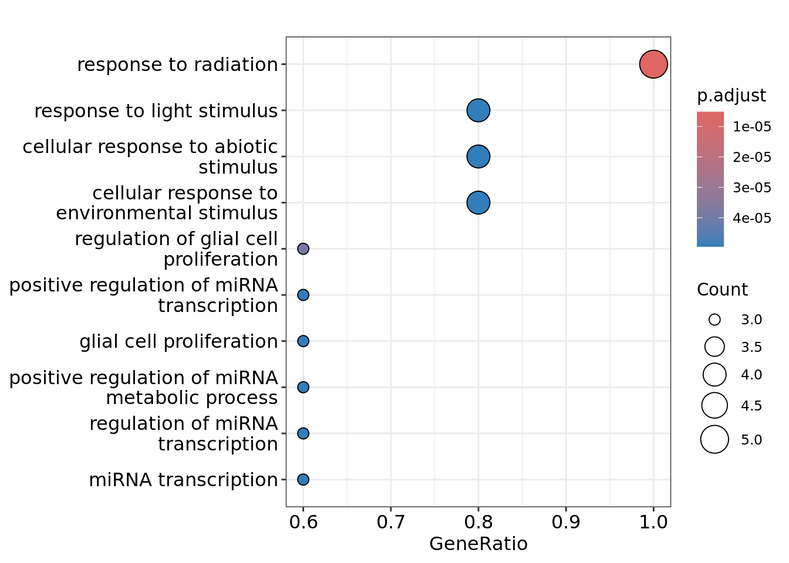
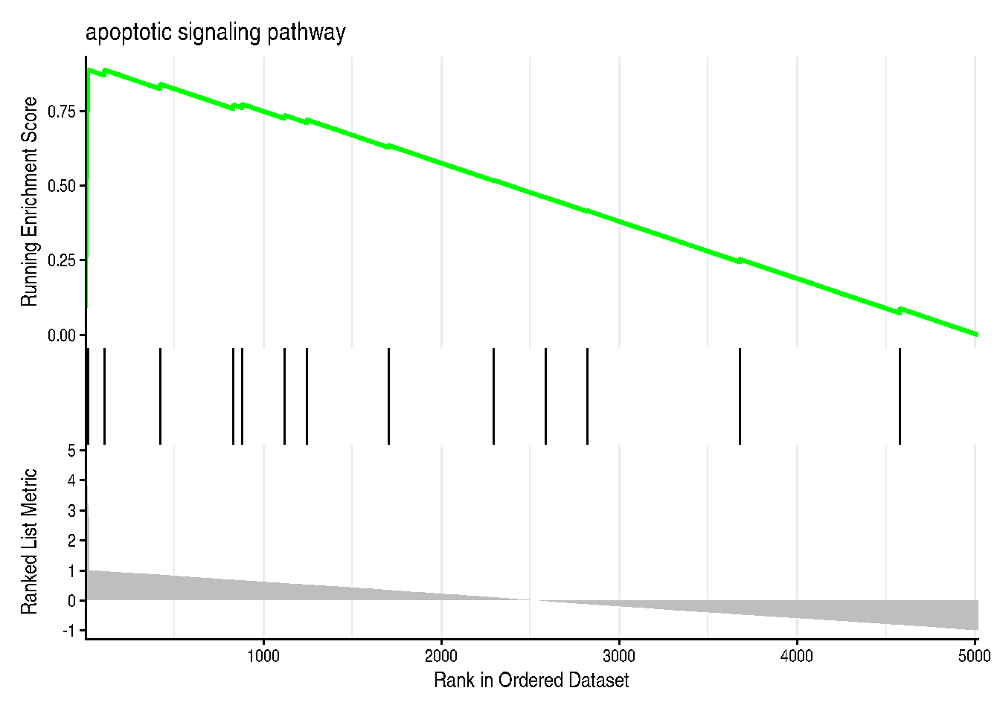

Análisis de Enriquecimiento Funcional (Functional Enrichment Analysis, FEA) con R
Introducción
El análisis de enriquecimiento funcional (Functional Enrichment Analysis, FEA) es una metodología utilizada para identificar las categorías biológicas o procesos (por ejemplo, vías metabólicas, funciones moleculares) que están sobrerrepresentadas en un conjunto de genes frente a un conjunto de fondo.
Definición:
El análisis de enriquecimiento funcional identifica temas o procesos biológicos (como rutas o funciones moleculares) que están sobre-representados en un conjunto de genes comparado con un conjunto de fondo.
Idea clave:
El FEA ayuda a interpretar la relevancia biológica de grandes conjuntos de datos, como aquellos obtenidos en experimentos de genómica o transcriptómica, proporcionando contexto biológico para los hallazgos.
El FEA generalmente involucra tres componentes principales:
Conjunto de genes de consulta (por ejemplo, conjunto de genes sin ordenar o clasificado).
Sistema de clasificación funcional – bases de datos de vías, ontologías y otras categorías funcionales.
Algoritmo de enriquecimiento – compara los genes de consulta con el sistema de clasificación funcional para identificar categorías sobrerrepresentadas.
Conjunto de Genes de Consulta
El conjunto de genes de consulta es el punto de partida en el análisis de enriquecimiento funcional. Este conjunto puede estar compuesto por genes asociados a un fenotipo, genes implicados en una expresión diferencial, o genes identificados en módulos de co-expresión.
Ejemplos de conjuntos de genes de consulta:
Listas no ordenadas: Genes asociados a un fenotipo, como los genes relacionados con términos de HPO (Human Phenotype Ontology), genes implicados en expresión diferencial, módulos de co-expresión o hubs de red.
Listas ordenadas: Genes ordenados por cambios en la expresión (por ejemplo, log2 de cambio en la expresión o significancia estadística).
Estos conjuntos de genes se comparan luego con una base de datos de categorías funcionales para identificar términos o procesos enriquecidos en el conjunto de interés.
Sistema de Clasificación Funcional
El sistema de clasificación funcional organiza el significado biológico de los genes a través de diferentes recursos, como bases de datos de vías o ontologías. Estos sistemas permiten vincular los genes a funciones biológicas conocidas y procesos celulares.
1. Bases de datos de vías:
Son colecciones de interacciones moleculares y procesos que representan rutas biológicas como transducción de señales, vías metabólicas y regulación génica.
Ejemplos de bases de datos de vías:
KEGG (Kyoto Encyclopedia of Genes and Genomes): Vías metabólicas y de señalización.
Reactome: Eventos moleculares detallados en rutas biológicas.
BioCarta: Procesos celulares y vías de señalización.
2. Ontologías:
Son representaciones jerárquicas de conceptos biológicos y sus relaciones. Permiten organizar el conocimiento biológico en términos amplios o específicos.
Ejemplos de ontologías:
Gene Ontology (GO):
Biological Process (BP): Funciones biológicas realizadas por un conjunto de genes.
Molecular Function (MF): Actividades de los genes o proteínas individuales.
Cellular Component (CC): Ubicaciones de los productos génicos dentro de las células.
Human Phenotype Ontology (HPO): Anomalías fenotípicas asociadas con enfermedades humanas.
Métodos de Análisis de Enriquecimiento Funcional
Los métodos más comunes para realizar un análisis de enriquecimiento funcional (FEA) son:
Análisis de Sobrerrepresentación (ORA): Este método identifica si las categorías funcionales predefinidas (por ejemplo, términos GO o vías KEGG) están sobrerrepresentadas en un conjunto de genes de consulta en comparación con un conjunto de fondo.
Gene Set Enrichment Analysis (GSEA): A diferencia de ORA, GSEA no utiliza un umbral para seleccionar genes, sino que analiza la enriquecimiento a lo largo de una lista ordenada de genes.
Análisis de Sobrerrepresentación (ORA)
¿Cómo calcula el p-valor el test exacto de Fisher?
El test exacto de Fisher se utiliza para calcular el p-valor en el análisis de sobrerrepresentación. A continuación, te muestro un ejemplo con valores reales.
Imaginemos que estamos analizando el término GO GO:0007155 (“adhesion celular”) en un conjunto de genes y queremos comprobar si está sobrerrepresentado en el conjunto de genes de consulta frente al fondo.
Tabla de contingencia:
Genes con GO:0007155
Genes sin GO:0007155
Genes de Consulta
25
75
Genes de Fondo
100
800
#### Cálculo del p-valor:
El p-valor se calcula con el test exacto de Fisher utilizando la siguiente fórmula:
El cálculo se realiza con el siguiente código en R:
# Tabla de contingenciaa <-25# Genes de consulta con GO:0007155b <-75# Genes de consulta sin GO:0007155c <-100# Genes de fondo con GO:0007155d <-800# Genes de fondo sin GO:0007155# Realizar el test exacto de Fisherfisher_result <-fisher.test(matrix(c(a, b, c, d), nrow =2))# Mostrar el p-valorfisher_result$p.value
[1] 0.0003224737
Este código devolverá el p-valor, que indica si el término GO:0007155 está sobrerrepresentado en el conjunto de genes de consulta.
Implementación de ORA en clusterProfiler
Ahora que hemos cubierto la teoría, pasemos a la implementación práctica de ORA utilizando el paquete clusterProfiler en R.
1. Cargar el Paquete
# Cargar el paquete clusterProfiler y base de datos humanolibrary(clusterProfiler)
clusterProfiler v4.14.3 Learn more at https://yulab-smu.top/contribution-knowledge-mining/
Please cite:
Guangchuang Yu, Li-Gen Wang, Yanyan Han and Qing-Yu He.
clusterProfiler: an R package for comparing biological themes among
gene clusters. OMICS: A Journal of Integrative Biology. 2012,
16(5):284-287
Attaching package: 'clusterProfiler'
The following object is masked from 'package:stats':
filter
library(org.Hs.eg.db)
Loading required package: AnnotationDbi
Loading required package: stats4
Loading required package: BiocGenerics
Attaching package: 'BiocGenerics'
The following objects are masked from 'package:stats':
IQR, mad, sd, var, xtabs
Welcome to Bioconductor
Vignettes contain introductory material; view with
'browseVignettes()'. To cite Bioconductor, see
'citation("Biobase")', and for packages 'citation("pkgname")'.
Loading required package: IRanges
Loading required package: S4Vectors
Attaching package: 'S4Vectors'
The following object is masked from 'package:clusterProfiler':
rename
The following object is masked from 'package:utils':
findMatches
The following objects are masked from 'package:base':
expand.grid, I, unname
Attaching package: 'IRanges'
The following object is masked from 'package:clusterProfiler':
slice
Attaching package: 'AnnotationDbi'
The following object is masked from 'package:clusterProfiler':
select
library(enrichplot)
enrichplot v1.26.2 Learn more at https://yulab-smu.top/contribution-knowledge-mining/
Please cite:
Guangchuang Yu. Gene Ontology Semantic Similarity Analysis Using
GOSemSim. In: Kidder B. (eds) Stem Cell Transcriptional Networks.
Methods in Molecular Biology. 2020, 2117:207-215. Humana, New York, NY.
2. Definir los Genes de Interés
Supongamos que tenemos un conjunto de genes de interés que han sido identificados en un experimento (por ejemplo, genes asociados con cáncer).
# Lista de genes de interés (nombres reales de genes)genes_of_interest <-c("BRCA1", "TP53", "EGFR", "MYC", "KRAS")
3. Realizar el Análisis de Sobrerrepresentación
Usamos la función enrichGO() para realizar el análisis de sobrerrepresentación de términos GO: Biological Process (BP).
# Realizar el análisis de ORA con términos GO: Biological Processgo_enrich <-enrichGO(gene = genes_of_interest, OrgDb = org.Hs.eg.db, keyType ="SYMBOL", ont ="BP", pAdjustMethod ="BH", # Ajuste de p-valor con método Benjamini-HochbergpvalueCutoff =0.05) # Umbral de significanciahead(as.data.frame(go_enrich))[1:5,]
Podemos visualizar los resultados de ORA en un gráfico de puntos utilizando la función dotplot():
# Visualizar los resultados de ORAdotplot(go_enrich)

Este gráfico mostrará los términos de GO que están significativamente enriquecidos en el conjunto de genes de interés.
Gene Set Enrichment Analysis (GSEA)
El Gene Set Enrichment Analysis (GSEA) es una metodología utilizada para determinar si los genes de un conjunto específico (o gene set) están distribuidos de manera enriquecida en las posiciones altas o bajas de una lista ordenada de genes. A diferencia de otros métodos, como el Análisis de Sobrerrepresentación (ORA), GSEA no requiere un umbral predefinido para seleccionar genes significativos. En cambio, utiliza toda la lista de genes ordenados de acuerdo a una métrica, como el cambio en la expresión génica o el valor p, para identificar si las categorías funcionales (como Gene Ontology (GO) o vías de KEGG) están asociadas con genes más relevantes.
¿Cómo funciona GSEA?
El algoritmo de GSEA calcula una puntuación de enriquecimiento (Enrichment Score, ES) para cada conjunto de genes basado en cómo estos genes se distribuyen en la lista ordenada de genes. Esta puntuación refleja cuán “enriquecidos” están los genes de un conjunto en las primeras o últimas posiciones de la lista.
Puntuación de Enriquecimiento (ES) y el Hit Score
En GSEA, la puntuación de enriquecimiento (ES) se calcula utilizando un hit score que aumenta o disminuye conforme se recorre la lista de genes. El proceso es el siguiente:
Ordenar los genes: Primero, se ordenan los genes en función de una métrica de interés (por ejemplo, el log2 fold change entre dos condiciones experimentales).
Puntuación del “hit”: A medida que se recorre la lista de genes ordenados, la puntuación aumenta cuando un gen que pertenece al conjunto de genes de interés (“hit”) aparece en la lista. Cada vez que un gen de la lista pertenece al conjunto de genes, se suma un valor positivo al hit score. En caso contrario, la puntuación disminuye, lo que puede causar que el hit score baje en valores negativos.
Máxima puntuación de hit (ES): La puntuación de enriquecimiento (ES) es el valor máximo alcanzado por el hit score a medida que se avanza por la lista. Es decir, se recorre la lista de genes, acumulando el hit score conforme aparecen genes del conjunto de interés. La puntuación ES será el valor más alto que alcance el hit score durante todo el recorrido.
Normalización de la Puntuación de Enriquecimiento (ES)
La puntuación ES puede normalizarse para evitar sesgos debido al tamaño del conjunto de genes. La normalización se realiza dividiendo la puntuación ES entre el tamaño del conjunto de genes, lo que permite hacer comparaciones más justas entre diferentes conjuntos de genes.
Ejemplo de GSEA con R
En este ejemplo, utilizaremos una lista de genes ordenados por log2 fold change y realizaremos un análisis de GSEA para determinar si los conjuntos de genes asociados con ciertas vías están enriquecidos en los genes con mayor cambio de expresión.
1. Instalar y cargar las bibliotecas necesarias
Primero, necesitamos instalar y cargar los paquetes necesarios para realizar GSEA en R, como clusterProfiler y org.Hs.eg.db (base de datos de genes humanos).
# Cargar los paquetes necesarios (como con ORA)library(clusterProfiler)library(org.Hs.eg.db)library(enrichplot)
2. Preparar los datos de entrada
Supongamos que tenemos una lista de genes ordenados por log2 fold change. Para este ejemplo, utilizamos genes simulados con su respectivo valor de log2 fold change.
# Define significant genes associated with apoptosis (example GO term)significant_genes <-c("TP53", "BAX", "CASP3", "CASP8", "FAS", "FASLG", "BCL2", "BCL2L1","CYCS", "BAD", "BID", "DIABLO", "XIAP", "TRAF2", "TNFRSF10B")# Get 500 random gene symbols from org.Hs.eg.db (or another source)library(org.Hs.eg.db)all_genes <-keys(org.Hs.eg.db, keytype ="SYMBOL")set.seed(321) # Ensure reproducibilityrandom_genes <-sample(setdiff(all_genes, significant_genes), 5000)# Assign log2FC valuesset.seed(321)log2FC_significant <-runif(length(significant_genes), 2, 5)log2FC_random <-runif(length(random_genes), -1, 1) # Smaller log2FC for random genes# Combine into a single data framegene_list <-data.frame(Gene =c(significant_genes, random_genes),log2FC =c(log2FC_significant, log2FC_random))# Prepare named vector for gseGO inputgene_list_vector <-setNames(gene_list$log2FC, gene_list$Gene)# Sort gene list in descending ordergene_list_vector <-sort(gene_list_vector, decreasing =TRUE)# Preview the top of the gene listhead(gene_list_vector)
Utilizamos el paquete clusterProfiler para realizar GSEA sobre los términos de Gene Ontology (GO) en el subdominio de Biological Process (BP).
# Realizar el análisis GSEA para los términos GO: Biological Process (BP)gseGO_results <-gseGO(geneList = gene_list_vector,OrgDb = org.Hs.eg.db, keyType ="SYMBOL",ont ="BP", # Biological ProcesspvalueCutoff =0.05)
using 'fgsea' for GSEA analysis, please cite Korotkevich et al (2019).
preparing geneSet collections...
GSEA analysis...
Warning in fgseaMultilevel(pathways = pathways, stats = stats, minSize =
minSize, : For some of the pathways the P-values were likely overestimated. For
such pathways log2err is set to NA.
Warning in fgseaMultilevel(pathways = pathways, stats = stats, minSize =
minSize, : For some pathways, in reality P-values are less than 1e-10. You can
set the `eps` argument to zero for better estimation.
# Visualizar los resultadosgseaplot2(gseGO_results, geneSetID =1, title = gseGO_results$Description[1])

4. Interpretación de los resultados
La tabla muestra los términos GO enriquecidos. Los términos GO que tienen una puntuación de ES alta y valores de p bajos son los más significativos.
El gráfico generado por gseaplot2 demuestra que los genes relacionados con la apoptosis aparecen hacia el principio de la lista, lo que da como resultado un valor de enriquecimiento (ES) muy alto. Esto no debería sorprendernos, ya que forzamos que estos genes se encuentren al principio de la lista asignándoles valores de FC muy altos.
5. Ejemplo de buena puntuación de GSEA
Supongamos que en el conjunto de genes tenemos una vía de cáncer de mama que incluye genes como BRCA1, TP53, y PIK3CA. Si esta vía está bien representada en los genes con log2 fold change altos (es decir, los genes más diferenciales), el valor de ES será alto, indicando que esta vía está enriquecida en los genes más relevantes.
El análisis de GSEA nos ayudará a identificar si las vías relacionadas con el cáncer de mama están particularmente enriquecidas en genes con alto cambio de expresión, lo que podría sugerir que estos genes son importantes para el fenotipo observado.
Conclusiones
El análisis de enriquecimiento funcional es una herramienta poderosa para interpretar los resultados de estudios de genómica, transcriptómica y otros datos ómicos. Utilizando herramientas como clusterProfiler en R, podemos realizar análisis detallados de enriquecimiento y obtener información relevante sobre los procesos biológicos involucrados.